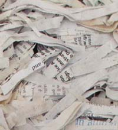
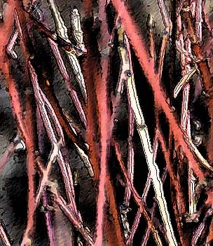

Friday, March 19, 2004
Google -- Is There Any Illusion It Cannot Demolish ?

I don't remember when I first read about Japan's "capsule hotels" -- it seems to me it was a very long time ago, probably in childhood, and probably in one of those three iconic magazines to which everyone subscribed back then, Life, Look or the Saturday Evening Post. I was deeply impressed, and have carried around an image in my head of gleaming sci-fi establishments, very 2001 Space Odyssey, frequented by quiet, serious, monk-like types in white jump suits, solitary travelers, probably artists, all exuding existential gravitas. I've always been fascinated by the idea of small spaces -- tents, closets, railroad berths, huts, holes, hermitages -- and the little Japanese hotel pods fit right in.
I realized, recently, I could google them.
First off, I learned that they are mostly frequented by drunken businessmen who have missed the last train home. That women, by and large, are not permitted to stay in them. Nor, oddly enough, are tattooed men, since tattoos are a marker for mob affiliation.
The Cosmo Plaza Akabane has an amusingly babelfished website that shows that capsule hotels more resemble kennels than Kubrickian spacecraft.
Another dream, alas, has been demolished. But, in its place, the Cosmo Akabane bathroom offers this koan-like reassurance:
For 24 hours, It can take a bath in the time of your hope.
Your fatigue will be healed by it.
Thursday, March 18, 2004
Waystation

Could the elusive, melancholy song with the line I sit alone in a waystation be Randall Thompson's "The Passenger" ?
It's from 1957, one of five love songs for baritone and piano, so the voice is right. The title's ringing the faintest of bells, a half-heard windchime in a barely palpable breeze. There's a recording of it, for which I've sent.
I've been thinking about the past. Thinking about how much of my life -- how many memories -- I've thrown into poems. I could arrange them chronologically and make an autobiography out of them. It's all very retro and uncool, all very pre-pomo and ewww, confessional, I know.
But I'm a poit, not a poet, and have no obligation to any theory of poetics. These verbal constructions of mine, these poem-like artifacts, are primitive, autodidactous; my shadow life, a heavily photoshopped slide show of my trip through this vallombrosa -- inherently fascinating to me, dull as, well, toast to others. Yawning is allowed, encouraged even, contagious.
Here's Raul.
Duodenum
Daddy had a duodenal
ulcer back in ‘61
when they were as de rigeur
as black hornrims and whifflecuts.
Dr. Tom prescribed a diet
(day old toast in heavy cream
with Aludrox and Miltown chasers)
and a hobby. So our tract house
gushed with oils -- tirades of flowers,
churning seascapes, moody clowns,
a few Pollocky drop-cloth abstracts
that Mommy wouldn’t let him hang.
Then came his mosaic phase.
Our surfaces grew Byzantine.
He crazy-tiled the coffee table,
TV, bureaus, mantelpiece,
the windowsills and countertops
and had plans for the patio
but realized that his burning foregut
was cool, man, cool -- Oh, Daddy-O --
it purred as softly as gray flannel
for fried eggs, bacon, coffee, T-bones,
dry martinis, Lucky Strikes.
So Daddy sheathed his pallette knife,
rejoined us at the common sirloin
back from his Gethsemane.
Scales of grout flaked off his fingers
and his eyes. He looked around.
His moon-faced daughter, silent wife
sat in shrines of glinting fracture
anointed with burnt umber, scarlet.
He felt sheepish. Rats and arms raced
round and round God’s lofty deathbed,
Communists walked Patton Street
in broad daylight ! His gut was quiet.
What could he do but pray for migraine ?
Memories, dreams and poems are like rooms. Arrangements of images and, in the case of poems, words and sounds, in timespace. Memories and dreams are private rooms. A poem is a public room, a room that appears different to everyone who enters it. And yet we can cohabit it, companionably.
Now here's my dear mother, the exquisitely anagrammed Camelia Vorring. The remembered object that sparked this poem is a skirt -- long, polished cotton, with black, pink and gray stripes. It was my mother's, and I played "dress-up" in it as a child. Plus some honeymoon photos. If you look closely at the poem, you will see my face before I was born. There, in the lower right hand corner.
The Origins Of Skirt
In the last hours of my bloodless néant,
outside Québec City’s battlements,
where an ordinary nuptial June
frothed in the postwar luxe et calme,
a woman in a full, lustrous skirt,
(coral, jet and silver-gray, its waist
so tiny it would nip a thick child jalouse)
scaled a hill, a barrow mound of stones,
each ovate, palm-sized, dull and river-smoothed.
A camera tracked her climb.
Six photos document the doomed ascent.
In stiff-soled lune-de-miel sandals
she skids up the cobbled, man-made dome
smiling at an implicit, adoring eye.
The lovely skirt balloons, unwraps
a startled O O of kneecaps, a slight
indrawn gasp of thigh. And then
she twists away as if strafed, thrashes, flails,
swats. He snaps and snaps. Her round eyes fill
with bombazine panic, pain, hate, néant.
The Kodak blanc-et-noir omits the hot
pink of skirt and welt, and how,
across the droning gulf of afternoon,
forty six chromosomes, a perfect 50’s His and Hers,
waved their arms and crossed their legs.
On the sixth photo, the one I call
Mother Seated Upon Cairn, Weeping ,
my father footnoted a fat hymenopteran,
in broad cartoonish stripes, piqûre en garde,
the bee-de-miel, leering, bumbling in.
Needless to say, a memory, that icon of pastness, is a mutable event that transpires wholly in the present. Memories fade, sharpen, change, disappear, arise de novo, get implanted -- it's a wonder human personalities cohere at all.
Commenting on my Love Letter post below, Dale calls writing a form of "clasping." What a great word. Clasping -- holding, gathering together, connecting, bundling, embracing.
I love how it subtly differs from clinging. It's looser, more provisional, spacious, temporary. The rope around a bundle of sticks rots; the sticks fall away.
I do think my writing has always been an attempt to fix the past. To fix it as in correct, revise, reshape. And to fix it as in freeze or preserve. There's both clasping and clinging involved. And dissemination: the wish to imprint simulacra of myself into the minds of others, an act of self-amplification and connection.
It's all very naive and primitive, fit for archiving in a dusty annex of The Museum Of Bad Art (MOBA)*.
*I've been there. It's all it promises, and more.
Tuesday, March 16, 2004
A Belated Love Letter

I like the smell of moldy cellars. It reminds me of publishing.
When I was 12 or so a pair of slightly younger girls, sisters, lived across the street. One day we decided to make a book. It was, of course, hand made, with a print run of one. My contribution was a poem, of which I remember two lines:
The butterfly story was sadder by far.
It was caught by a boy and brought home in a jar.
Already I had developed a worldview that defined cruelty as a masculine enterprise. My dear father, Raul Stanati, was a splendid parent. But when I was quite young, maybe six or seven, I went through a period of terrible insomnia. I think I was afraid of bad dreams -- bad dreams of dark, empty houses where light switches did not work and faceless ghosts electrified and paralyzed me. I'd insist that my mother remain awake while I tried to sleep; from my door I could see the narrow beam of light that proved she was sitting vigil, under the floor lamp, probably smoking a Kent or eating an orange.
One night, seized by doubt, I tiptoed past my doorway and looked around the corner. No mother. A terrible ruse !
"Stop crying or I'll give you something to cry about !" bellowed my irate and sleepless father, standing at my bedside in his snow-white briefs, his hair sticking up on end.
It was all very pre-oedipal. I wanted my Mommy. Daddy begged to differ. Boys were mean .
We created our book in the cellar of the sisters' old house, working at a card table by the back wall window. The light from the yard came in through streaky glass ; the rest of the cellar was in darkness. A hulking, cistern-like boiler crouched in the shadows.
I like to remember those three girls, inexplicably drawn to create that most potent and mysterious of icons, a book. I think back even farther, to second grade. I'd decided I was going to make a book. Of flowers. One to a page: some rayed and daisy like, others cupped like tulips -- the ur-flowers of my limited botanical imagination. I shuttled back and forth from desk to construction paper shelf, tossing off the flowers as fast as I could.
What are you doing, asked the fearsome Miss Janson, a short and bull-dog like woman, practically crewcut, who had known my parents at teacher's college.
I am making a book ! I replied.
She scrutinized my pile of drawings of redundant flowers.
You are wasting paper, she declared.
Well, I was, in a way. And I knew it. I scribbled the flowers faster and faster, gleeful as the manuscript increased in heft, unmindful of craft, of readership, greedily prolific.
There's a lesson in there somewhere.
I once harbored the notion of attempting to publish a slim volume of verse. I entered a few of those "first book" competitions, and hurled a few mss's over unsuspecting and hostile transoms. I even got accidentally networked via a poetry buddy to a small press whose mission -- multicultural free verse political poetry -- was utterly different from my own poitic project. It was no surprise when my ms. returned several years later with some harsh editorial comments on the clumsiness of my iambics and the tawdry "personal" nature of my subject matter.
Wasting paper again, I see, sneers Miss Janson from beyond the grave.
She did have supernatural powers, you know.
The proof came one day just before class began. Before our late 1950's public school morning ritual of the pledge of alliegance, a patriotic song and two prayers: The Lord's Prayer, and, of all things, the 23rd psalm. What did a seven year old know about Vallombrosa ? Miss Janson was nowhere to be seen and we were growing restive. Suddenly her voice boomed forth from the intercom: INGRID PUT YOUR DESKTOP DOWN ! The heavy oak desktop crashed down. We stared, dumbstruck, at poor Ingrid.
How did Miss Janson know ?
I've never solved that mystery.
It was a memorable year. It was an old, brick school, very fin de siecle, with windows so tall one opened them with a window stick I had a crush on a blond Polish girl, Karen Plonowski, who either liked or had horses. (Probably liked. This was Lawrence, Massachusetts, after all, a grim post-industrial mill town, not Weston or Dover.) We made sputnicks out of styrofoam balls and toothpicks, and christmas ornaments -- birds -- out of milkweed pods. We had A- bomb drills -- duck and cover, the real deal -- and were issued little cards that read ... if you see a flash of light in the sky, take cover ... . Sunlight glinting off an airplane's wing terrified me as I walked home that day. I clipped articles about fallout shelters from the Lawrence Eagle Tribune, and we stocked my father's basement music closet with cans of food and jugs of water; small comfort to those of us who were in the know. That plywood door would not keep out the deadly gamma rays.
We lived in the valley of the shadow of death. Was I scribbling flowers for posterity ? Wait -- what posterity ?
One day in class we were going to make "moon rocks." These were based on a popular fifties science toy -- a kit for brewing a chemical soup in which multicolored, Dr Seussian stalagmites would grow. Very JFK, very space race. But that day we apparantly lacked some component of the mix. Undaunted, Miss Jansen bellowed out of the tall, third story window at some passing boys, tossed down some money, and commanded them to buy it for her at the corner store.
I remember them. They seemed impossibly old. Why weren't they in school ? They swaggered about. Am I remembering them through a Fonzie filter ? The sleeves of their undershirts were rolled up over bulging biceps, and one of them swigged orange tonic (Massachusettsian for soda pop) from a large glass bottle. They exuded danger. Yet they were in Miss Janson's thrall.
She was powerful. Her rule and her windowstick, they comforted us. But can anything really counteract the presence of our enemies -- furious fathers, dangerous boys, men with A-bombs -- when the chair beneath the lamp is so very, very empty ?
Monday, March 15, 2004
Oh My Papas
I fianlly remembered to ask my father, the dear and ultra anagrammatic Raul Stanati, about the song. Do you remember, I asked, a song you used to sing, something about a train and a waystation ? Maybe by Randall Thompson ?
No. He did not.
I sang a few bars. Badly, tentatively. I do not sing. Cannot, will not, must not sing. Period. But I sang. Mumble-sang, actually. My non-singing has something to do with having singing parents, some warped oedipal and/or electrical thing. I reference the old black and white photos of my parents onstage singing Gilbert & Sullivan at teachers' college. They are making beautiful music together. (Stroking her beard.) Primal scene ? Where is the Alienist when I need him ?

Now I must digress further. The Alienist -- and I called him that in my journals decades before he became (in)famous for his studies of alien abductions -- sent me to an EST-like workshop called, if I remember correctly, "Relationships" in Boston in 1984. The group leader was an arrogant, sadistic little shit who reminded me of Groucho Marx. One participant was given a nightmare task. She had to do what she feared most. She had to sing in front of the group. She stood there for long, long minutes, paralyzed, trembling, staring at the floor, unable to open her mouth. I felt every moment of her pain as if it were my own.
Groucho's working the interrogation rooms at Gitmo these days, I feel it in my bones.
So I've made progress. I actually sang for my father. He remembered the song, but not the composer. And he still loves me, despite the singing. I love calling him "Raul Stanati." It is a dashing, swarthy, romantic name for my dashing, swarthy romantic father. Who could indeed have been played by late, wonderful actor Raul Julia.
You will understand why "Alan Turista" would not have done at all.
Has there been equivalent progress in resolving the psychoanalytic transference ?
I would like to be able to say Him ? Oh, he went right off the deep end. A sad case. Or, Recovered memories ? Of alien abductions ? Isn't a psychiatrist supposed to make people less crazy ?
But if I said that he might not love me anymore.
So, to preserve that imagined love and approbation, I find myself entertaining the notion that people are brought up beams of light into spaceships. By little gray aliens. Who probe them and impregnate them. On some alternate, spiritual plane of reality. To warn us all of impending ecological armageddon.
Oh, dear.
I loved and love The Alienist. He was a wonderful doctor. Kind, respectful, attentive, faithful, insightful. Being in psychoanalysis with him was a transformative event in my life. But, gosh.
Well, maybe it's all metaphor, interpretable in the same way a dream is. Just a latter day just-as-implausible alternative to Freud's poles and holes and castration anxiety. Just a different schema, language.

Signs are arbitrary, right ? And the author, that disreputable Mr Kurtz behind the oz screen, he's dead, isn't he ? And the self is a fiction, easily deconstructable ? Tout comprendre c'est tout pardonner ? The rain in spain ? A painted rice cake ? Daddy, headshrink, guru, pope !
Who wrote that song ?
I'll never know. It's a lovely tune. Simple, plaintive, slightly melancholy.
I sit alone in a waystation.
Did we dream it ?
No. He did not.
I sang a few bars. Badly, tentatively. I do not sing. Cannot, will not, must not sing. Period. But I sang. Mumble-sang, actually. My non-singing has something to do with having singing parents, some warped oedipal and/or electrical thing. I reference the old black and white photos of my parents onstage singing Gilbert & Sullivan at teachers' college. They are making beautiful music together. (Stroking her beard.) Primal scene ? Where is the Alienist when I need him ?
Now I must digress further. The Alienist -- and I called him that in my journals decades before he became (in)famous for his studies of alien abductions -- sent me to an EST-like workshop called, if I remember correctly, "Relationships" in Boston in 1984. The group leader was an arrogant, sadistic little shit who reminded me of Groucho Marx. One participant was given a nightmare task. She had to do what she feared most. She had to sing in front of the group. She stood there for long, long minutes, paralyzed, trembling, staring at the floor, unable to open her mouth. I felt every moment of her pain as if it were my own.
Groucho's working the interrogation rooms at Gitmo these days, I feel it in my bones.
So I've made progress. I actually sang for my father. He remembered the song, but not the composer. And he still loves me, despite the singing. I love calling him "Raul Stanati." It is a dashing, swarthy, romantic name for my dashing, swarthy romantic father. Who could indeed have been played by late, wonderful actor Raul Julia.
You will understand why "Alan Turista" would not have done at all.
Has there been equivalent progress in resolving the psychoanalytic transference ?
I would like to be able to say Him ? Oh, he went right off the deep end. A sad case. Or, Recovered memories ? Of alien abductions ? Isn't a psychiatrist supposed to make people less crazy ?
But if I said that he might not love me anymore.
So, to preserve that imagined love and approbation, I find myself entertaining the notion that people are brought up beams of light into spaceships. By little gray aliens. Who probe them and impregnate them. On some alternate, spiritual plane of reality. To warn us all of impending ecological armageddon.
Oh, dear.
I loved and love The Alienist. He was a wonderful doctor. Kind, respectful, attentive, faithful, insightful. Being in psychoanalysis with him was a transformative event in my life. But, gosh.
Well, maybe it's all metaphor, interpretable in the same way a dream is. Just a latter day just-as-implausible alternative to Freud's poles and holes and castration anxiety. Just a different schema, language.
Signs are arbitrary, right ? And the author, that disreputable Mr Kurtz behind the oz screen, he's dead, isn't he ? And the self is a fiction, easily deconstructable ? Tout comprendre c'est tout pardonner ? The rain in spain ? A painted rice cake ? Daddy, headshrink, guru, pope !
Who wrote that song ?
I'll never know. It's a lovely tune. Simple, plaintive, slightly melancholy.
I sit alone in a waystation.
Did we dream it ?
Sunday, March 14, 2004
From the Bullpit
The rhetoric sharpens. The archbishop declines to meet with gay Catholics, then appeals for charity in a Globe op ed piece. Charity for whom, one wonders, suspecting he means for Catholics in their avowed and doctrinal objection to homosexuality. A group of black Protestant clergy sniff: Do not call your struggle one for "civil rights." We suffered more than you did. Gays must not wed. The Bible says so.
Outside the state house the placards grow more stridently Phelpsian, the appeals grow more blatantly evangelical and fundamentalist. Let there be no further doubt that this anti-gay marriage constitutional effort is an attempt to write sectarian Christianity into civil law. To make me subject to the stipulations of doctrine that I reject.
The latest rhetorical gambit is to invoke Sweden. To correllate gay marriages with a plethora of supposed social ills. The old post hoc propter hoc fallacy. One might just as well correllate herring consumption with divorce rate. The intellectual dishonesty is staggering. Or, more charitably, the stupidity is staggering.
Inside the state house the attempts to compromise with social justice produce a convoluted mess of legal text and political strategy -- an amendment that says: marriage must be between a man and a woman. Gays shall have a "civil union" that confers the same rights and responsibilities.
Separate and probably not equal.
Governor Romney, AKA the Mitthead, looking more like J.R. Bob Dobbs by the minute,


vows to appeal to the Supreme Court to postpone the May 17th deadline for allowing gay marriage, and, eye on the White House, hints at other imperial tactics up his sleeve.
We can only hope that, eventually, we will be snapping our fingers to some latter day Mingus' Fables of Faubus-like tune -- Myths of Mitt perhaps ? -- appalled at the bitter, destructive prejudices of a backward age.